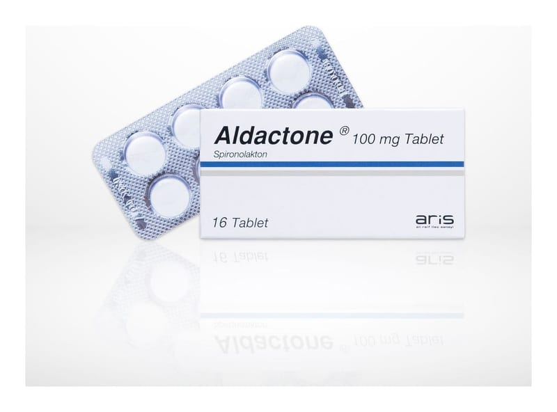

Aldactone 100 mg Tablet, 50 Adet

Ne için kullanılır
KT · Bölüm 1ALDACTONE®idrar söktürücü olan ve diüretikler olarak adlandırılan gruba dahildir. ALDACTONE®; beyaz, bir yüzünde “SEARLE” yazan, yuvarlak, nane kokulu tabletler, 16 tablet içeren blister ambalajlarda temin edilebilir. Ayak bileğinizde şişme varsa ya da kesik kesik nefes alıyorsanız doktora gidiniz. Bu durum vücudunuzda fazla sıvı miktarı olması durumunda kalbinizin pompalama gücünde ortaya çıkan zayıflık nedeniyle olabilir. Bu durum konjestif kalp yetmezliği olarak adlandırılır. Ekstra sıvının vücudunuzda dolaştırılması kalbinizin daha çok çalışması demektir. Doktorunuz vücudunuzdaki fazla sıvı atılımını sağlamak için size ALDACTONE®verecektir. ALDACTONE®kullandığınız zaman daha fazla tuvalete gitme ihtiyacı duyarsınız. Böylece fazladan sıvıyı idrarınızla atarsınız. ALDACTONE®ayrıca aşağıdaki durumların tedavisinde de kullanılır: • Esansiyel hipertansiyon (nedeni bilinmeyen hipertansiyon) • Nefrotik sendrom (vücutta çok fazla sıvı toplanmasına neden olan bir böbrek hastalığı) • Assit (örneğin karaciğer sirozunun neden olduğu, karın içinde sıvı toplanması) • Primer aldosteronizm (Aldosteron isimli hormonun çok yüksek düzeyde olmasına bağlı vücutta sıvı toplanması) • Diüretiklerle birlikte hipokalemi/hipomagnezemi (kan potasyum düzeyinin normalin altına düşmesi) birleşik tedavisinde
• Hirsutizm (kıllanma artışı) tedavisinde